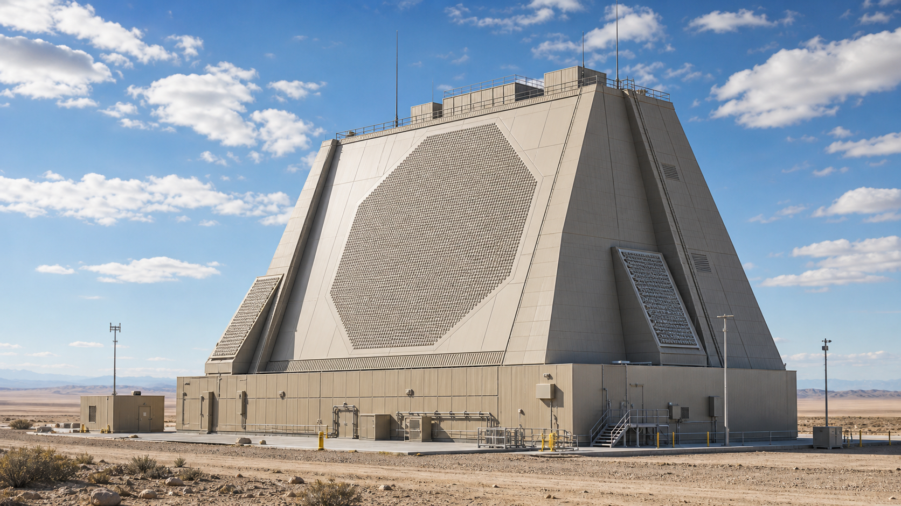
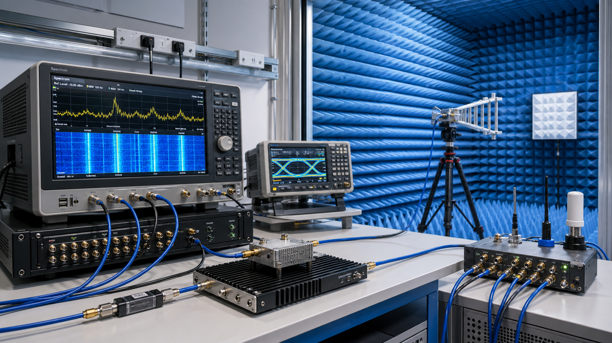

Four operations. Built for high-fidelity reconstruction.
NOEMA reduces raw signal data volume without requiring changes to existing recorders, archives, processors, or replay workflows.
Built for high-volume I/Q, radar, RF, and SAR datasets. Runs from defaults, with tuning available when fidelity, throughput, or archive constraints matter.
NOEMA compresses signal data according to the statistical profile of each dataset. Compression performance depends on format, entropy, quantization, and fidelity target.
Sidecar metadata records file structure, decode locations, reconstruction settings, and verification context so selected files or regions can be accessed later.
Reconstruct full files or selected signal regions for replay, analysis, validation, model-development workflows, or existing ground-processing pipelines. Reconstruction quality is measured with signal-level metrics.
Designed for demanding signal pipelines.
Raw signal data is expensive to store, slow to transfer, and difficult to keep available for future replay, analysis, and processing. NOEMA reduces data volume while keeping reconstruction and downstream use in view.
SAR and radar signal data can be compressed at the source, on the ground, or between archive layers. Built for workflows where preservation, reconstruction fidelity, and downstream processing compatibility matter.

Deployable on-premises, in air-gapped environments, or close to the point of collection. Supports workflows where bandwidth is constrained, storage is limited, and reconstruction fidelity matters.

Raw RF recordings can be compressed, indexed, and reconstructed so analysts can retrieve selected windows, replay events, and preserve signal evidence.
Selective reconstruction. Shared representation. Verified compression.
Region-based access
NOEMA sidecar metadata enables decoding of specific regions, time windows, or segments without full archive reconstruction, reducing unnecessary data movement during access.
Shared codebook
One codebook can serve a batch of files, reducing overhead and keeping reconstruction behavior consistent across the archive.
Auditability
Sidecar metadata records what was compressed, how it was reconstructed, and which fidelity metrics were measured for every file.
Runs beside existing systems
Designed to work with existing recorders, archives, processors, replay tools, and analysis workflows during evaluation.
Request access
Human response within 24 hours. No automated sequences.
Request received.
We will be in touch within 24 hours.